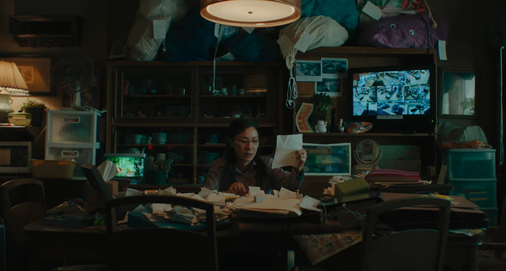
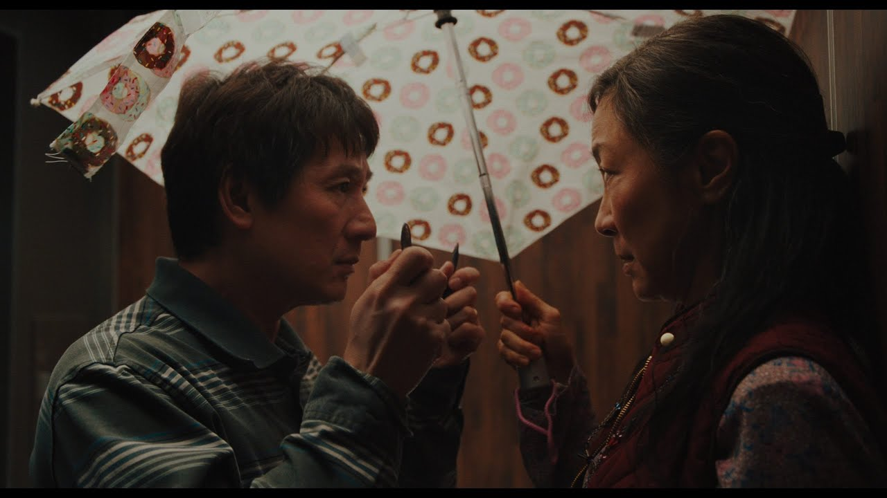
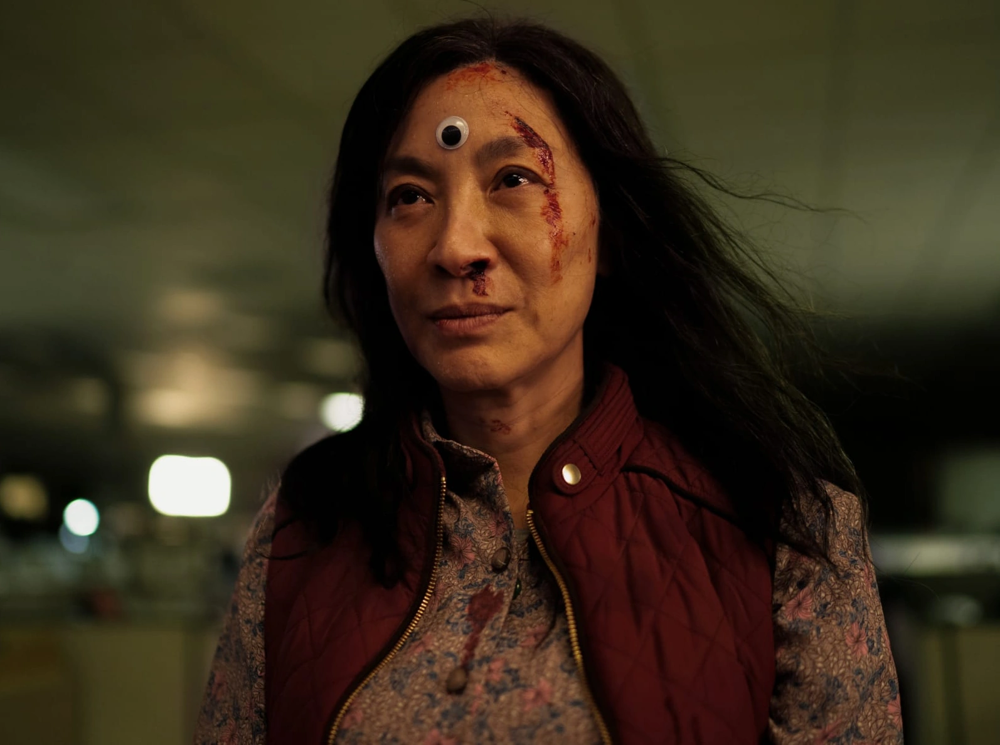
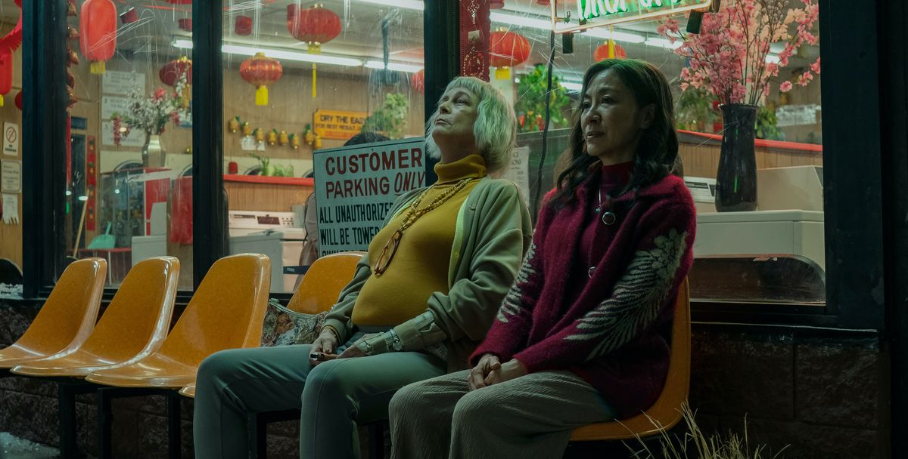

"In another life, I would have really liked just doing laundry and taxes with you."
PART ONE - EVERYTHING第一部分 - 一切

Evelyn Wang struggles with her failing laundromat, a strained marriage, and her difficult relationship with her daughter, Joy.
At the IRS office, Waymond from an alternate universe reveals the existence of the multiverse and a looming threat from Jobu Tupaki.

PART TWO - EVERYWHERE第二部分 - 无处不在
Evelyn learns to “verse-jump,” tapping into the skills and experiences of her alternate selves from countless universes. She encounters bizarre and wildly different versions of her life.
As she navigates these universes, Evelyn gains new abilities but struggles to comprehend the sheer vastness of the multiverse. Each universe provides insights into her choices and the paths her life could have taken, deepening her understanding of herself and those around her.

PART THREE - ALL AT ONCE第三部分 - 一次完成
Jobu, embodying nihilism, created an “everything bagel” to destroy herself and the multiverse, overwhelmed by the chaos of infinite possibilities.
Evelyn, now equipped with her newfound perspective, decides to confront the chaos with empathy and love rather than combat. By reconciling with her family and accepting life’s uncertainties, Evelyn prevents the destruction.

The resolution brings the family closer together, highlighting the importance of finding meaning in the mundane and cherishing the relationships that anchor them in a chaotic world.